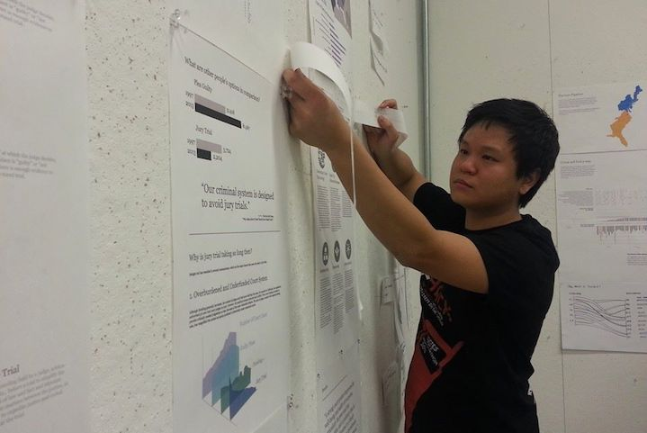

Validating and Visualizing data
I conducted the research by accessing online public database and reading books to have a deep understanding about the plea bargain topic. By talking to professionals in the law field and getting feedback from them, I helped my team to validate the information that we have visualized to avoid misleading content to the readers that might cause confusion.
Crafting the Story

The one-page long infographic website is the requirement for the final output for the project. Therefore, having a fluid and logical flow for the narrative of the website became a critical part of the project. Angelica and I worked on multiple iterations of the website just to craft an infographic narrative to effectively communicate the story. From crafting the title and subtitles, highlighting insights, providing context for data and presenting a sound conclusion, I contributed my part to work on both data points and visual hierarchy that strongly weave the plea bargain story together.
Web Design and Development
I developed the visual guidelines for the website to serve as a guide for us during the web design process. After working side by side with Angelica from sketching, wireframing till finalizing the final layout of the website, I started coding the website using the Bootstrap framework.